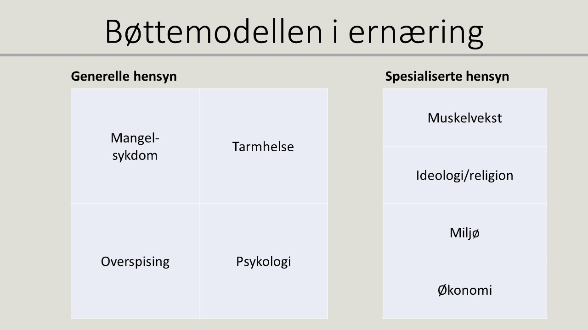
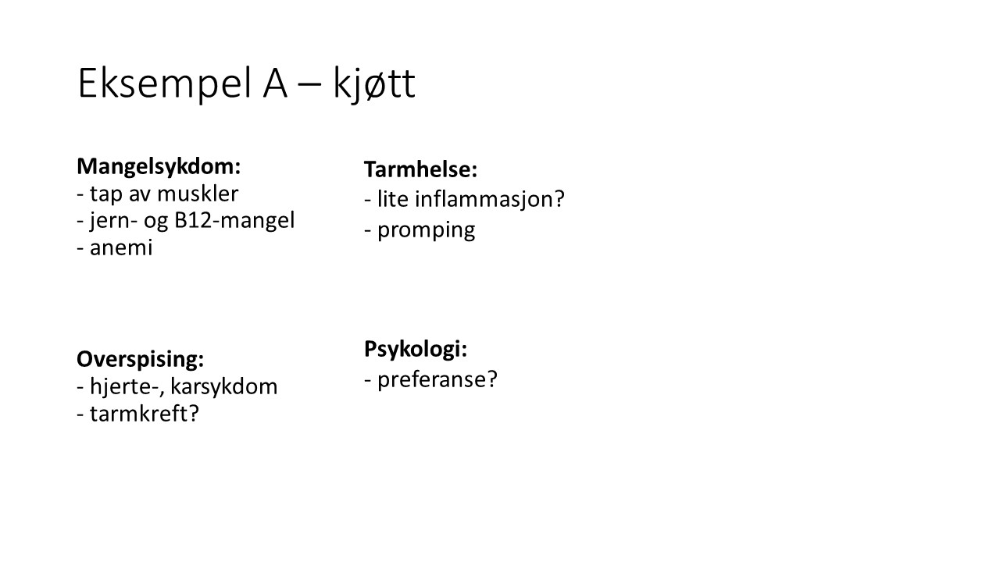
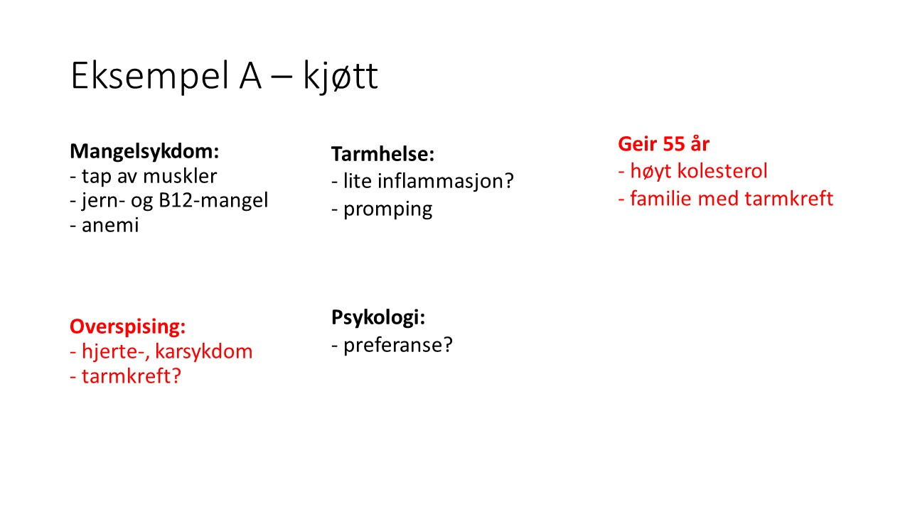
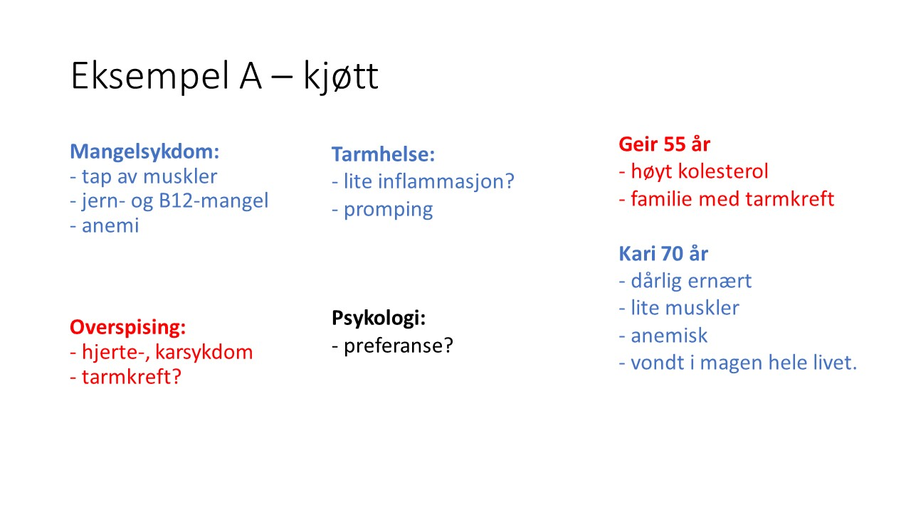
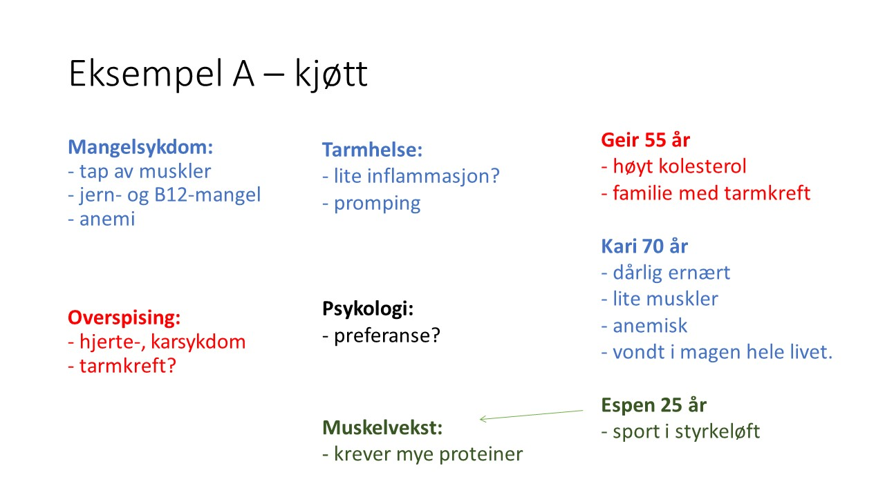

Bøttemodellen i ernæring
Generelle tanker
Intro: Jeg hører mye debatter på TV og internett hvor folk er uenige i ulike kostholdsråd. Og fordi kosthold berører store deler av livet, virker det å vekke sterke følelser. Samtidig er kosthold også veldig komplisert. Selv jeg som legestudent lurt til tider på "hvem er som har rett?" Derfor er dette mitt forsøk på en modell for hvordan man kan bryte ned spørsmålet "hva er det optimalt kostholdet?" Håpet mitt er at dette kan gi et bedre rammeverk for dialog rundt kosthold.
Ideologi: ofte finnes det ikke «riktig» eller «gale» svar når det gjelder ernæring. Ulikhetene ligger i hvordan du vekter ulike aspekter av helsen.
Hvem har behov for å endre på kostholdet?
Hvis du stiller lave krav til kroppen – f.eks. å bare overleve ut året – så trenger du et lite spesialisert kosthold. Derimot, hvis du stiller høye krav til kroppen din, så vil et spesialisert kosthold ha et relevant utbytte.
Bøttemodellen
Modell: hva som bestemmer hvilke kosthold du anbefales, gjøre ofte på grunnlag av fire aspekter av helsen; mangelsykdom, overspising, tarmhelse og psykologi. Hvordan du vekter viktigheten av hver av disse vil i stor grad tilsi hva ditt optimale kosthold er.
Praktisk: se for deg at du har 10 baller som du kan fordele mellom 4 bøtter. Hvordan du fordeler disse ballene reflekterer hva du finner viktigst mtp. din helse. Bøtten(e) med flest baller vil beskrive kostholdet som hjelper helsen din slik du ønsker.

Eksempel




Tilbake til uferdige prosjekter